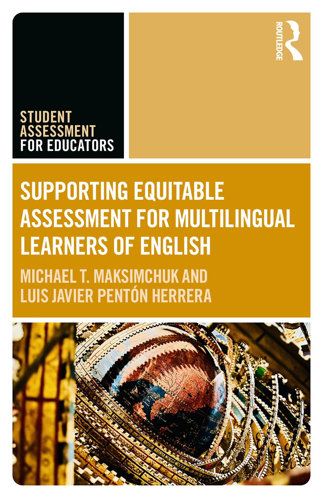

Books & scholarship
Equity, evidence, Published and forthcoming books co-authored with colleagues in assessment and multilingual education.

Cover © Routledge / Taylor & Francis, 2026 Published · April 2026 · Routledge
Supporting Equitable Assessment for Multilingual Learners of English Michael T. Maksimchuk & Luis Javier Pentón Herrera
The E5 model brings together equity, equality, educational justice, equanimity, and empowerment to support thoughtful assessment of multilingual learners.
Forthcoming · November 2026 · TESOL Press
Empowering Educators of Newcomers: A Comprehensive Guide to Instruction and Inclusion Luis Javier Pentón Herrera, S. Finn, M. J. Gómez Portillo, R. Hos, Michael T. Maksimchuk, F. M. Kray, F. N. Yi-Cline, and E. Tovar.
Anticipated 2027 · Routledge
Inclusive Instruction and Assessment in TESOL: Strategies for Teaching Diverse Learners K. R. Mahan, M. Ismailov, E. Guz, K. Vogt, J. Nijakowska, A. M. Vonen, Luis Javier Pentón Herrera, Michael T. Maksimchuk, and G. Neokleus.
Anticipated November 2027 · TESOL Press
Reading for Multilingual Learners: Adapting Literacy Instruction Luis Javier Pentón Herrera & Michael Maksimchuk.
Forthcoming titles and anticipated dates are listed as recorded in Mike’s current CV and may change.
Articles, research & reflections Explore shorter writing on assessment literacy, classroom practice, and professional learning.
Read the insights →